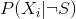
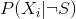
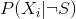
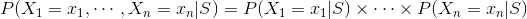
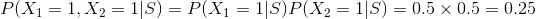
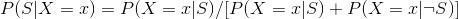
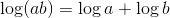
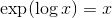
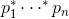
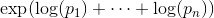

。站在概率论的角度，我 们用 Xi
表示事件“一封含有单词 wi
的邮件”。此外，我们还假设已经求出了
。站在概率论的角度，我 们用 Xi
表示事件“一封含有单词 wi
的邮件”。此外，我们还假设已经求出了  和  ，前者表示垃圾邮件中出现第 i 个单词的概率，后者表示非垃圾邮件中出现第 i 个单词的概率。
和  ，前者表示垃圾邮件中出现第 i 个单词的概率，后者表示非垃圾邮件中出现第 i 个单词的概率。13.2 一个复杂的垃圾邮件过滤器
假设我们已建立了一个词汇表，其中含有许多单词： 。站在概率论的角度，我 们用 Xi
表示事件“一封含有单词 wi
的邮件”。此外，我们还假设已经求出了 和  ，前者表示垃圾邮件中出现第 i 个单词的概率，后者表示非垃圾邮件中出现第 i 个单词的概率。
朴素贝叶斯算法的一个（大的）假设是，给定邮件是或不是垃圾邮件的条件下，其中的每个单词存在与否与其他单词毫不相干。直观地讲，就是知道某封垃圾邮件是否含有单词 viagra 无法帮助我们判断该垃圾邮件是否含有单词 rolex。如果用数学公式表示的话，就是：

这是一个非常极端的假设（这也部分解释了为何该算法名中含有“朴素”一词）。假设我们的词汇表仅含有单词 viagra 和 rolex，并且一半的垃圾邮件是推销“廉价伟哥”的，另一半是推销“劳力士正品”的，这样的话，我们可以通过朴素贝叶斯算法计算垃圾邮件中同时出现 viagra 和 rolex 这两个单词的概率：

之所以得到这样的结果，是因为我们的假设已经把 viagra 和 rolex 绝不会同时出现的经验给扔掉了。尽管这个假设与事实并不相符，但是这个模型的表现通常都很好，所以现实中经常用它过滤垃圾邮件。
前面我们曾经利用贝叶斯定理过滤只涉及 viagra 的垃圾邮件，下面我们再次用它来推断一个邮件是垃圾邮件的概率，具体公式如下所示：

朴素贝叶斯假设使我们能够轻松求出公式右边的每个概率：只要将词汇表中各个单词的概率相乘即可。
在实践中，为了避免所谓的下溢 （underflow）问题，你通常希望尽量避免出现大量概率相乘的情况，因为计算机不擅长处理非常接近于零的浮点数。根据代数知识我们知道， 且  ，因此我们一般使用对浮点数更加友好的等效方法来计算  ，具体公式如下所示：

现在，唯一的挑战就是估计 和 了，即估计垃圾邮件（或非垃圾邮件）中包含单词 wi
的概率。如果我们掌握了相当数量的“训练”邮件，即标记为垃圾或非垃圾的邮件，那么很明显，这时计算 就简化为求包含单词 wi
的垃圾邮件所占的比例了。
但是，这会引起一个大麻烦。假如词汇表中的单词 data 仅出现在训练集的非垃圾邮件中，那么 P (“data”|S )=0。也就是说，对于任何含有单词 data 的邮件，我们的朴素贝叶斯分类器总是认为它是垃圾邮件的概率为 0，即使是像含有“data on cheap viagra and authentic rolex watches”（关于廉价伟哥和劳力士正品的数据）这样的邮件也是如此。为了避免这种问题，我们通常要使用某种平滑技术。
准确地说，我们引入一个伪记数 （pseudo count），记为 k ，并通过下面的公式来计算在一封垃圾邮件中出现第 i 个单词的概率：
=（k + 含有 wi
的垃圾邮件的数量）/（2k + 垃圾邮件数量）
的计算方法与此类似。亦即，当计算第 i 个单词出现在垃圾邮件中的概率时，我们假定还看到：额外 k 封垃圾邮件包含该单词，额外 k 封垃圾邮件不包含该单词。
例如，如果 data 这个单词在 98 封垃圾邮件中出现了 0 次，并且 k 取值为 1，我们算出 P (“data”|S ) 为 1/100 = 0.01，这样一来，我们的分类器就能给那些含有单词 data 的邮件为垃圾邮件的概率赋予非 0 值了。